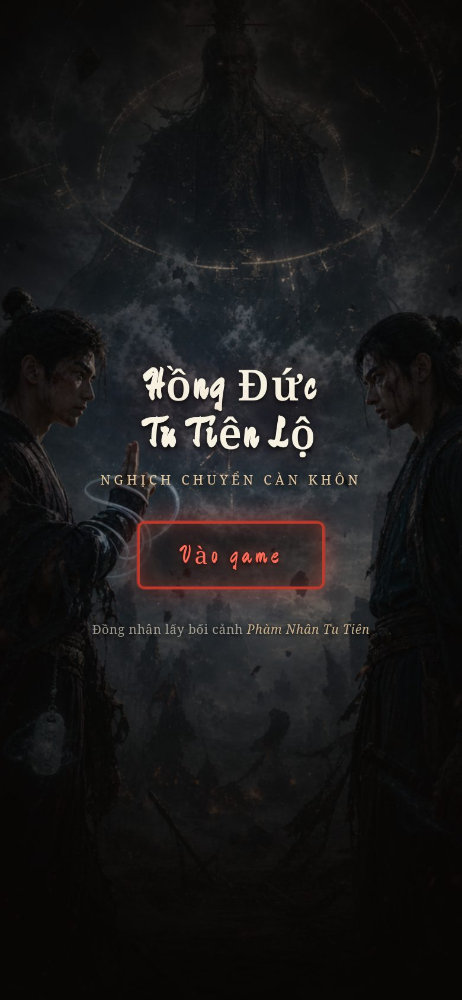
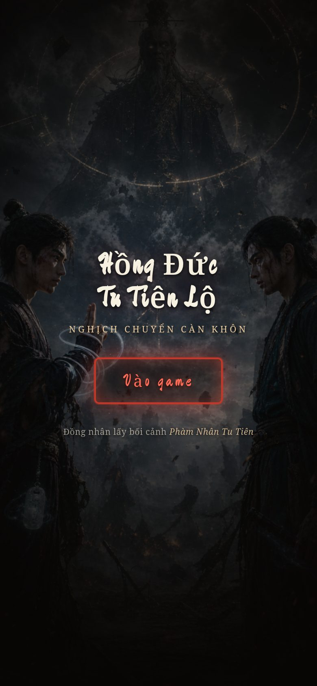
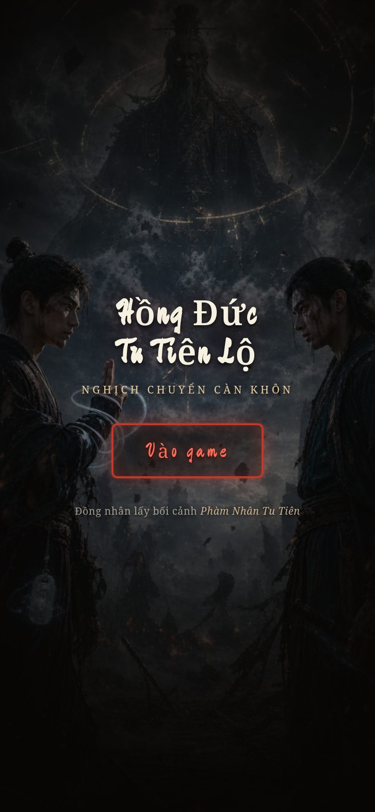

Việc 2 và 3 đã xong. Em tự kiểm hết trên điện thoại 390×844, cả bản chạy trên máy lẫn trang live.
Anh nói đúng: Chương 2 không có cảnh nào người chơi thật sự đánh nhau. Cao trào chỉ là đứng nhìn Hàn Lập giết Kim Quang Thượng Nhân — người chơi hoàn toàn thụ động.
Nay mỗi nhánh có ba cảnh đánh và một nhánh thua. Nhưng vẫn giữ đúng luật truyện: người chơi mới Luyện Khí tầng 1–3, không thể giết tà tu tầng cao. Nên mọi cảnh đánh là tìm cách thoát — ném đá lệch hướng, lách khe hẹp, đánh vào đầu gối rồi chạy. Chỗ duy nhất giết được là tà tu đã bị thương nặng, và đó là lựa chọn của anh, không phải mặc định.
| Nhánh | Cảnh | Số cách xử |
|---|---|---|
| Tán tu | Ba kẻ áo xám chặn đường đêm | 4 |
| Tán tu | Tà tu bị thương ở miệng khe | 3 |
| Tán tu | Bị chặn ở sườn đông khi rời cốc | 4 |
| Môn phái | Ba kẻ áo xám chặn đường đêm | 4 |
| Môn phái | Tà tu bị thương | 3 |
| Môn phái | Bị chặn ở sườn đông | 4 |
Chương 2: 140 → 164 đoạn.
Ảnh chụp thật từ trang live, không phải hình vẽ. Ba tấm liên tiếp: ngã ba, màn thua, và sau khi bấm "Lùi lại".

Không còn lựa chọn nào, không có nút sang chương, ô gõ hành động tự do cũng ẩn. Chỉ còn hai nút thoát để anh không bị kẹt ở một màn chữ trơ.


| Phép kiểm | Kết quả |
|---|---|
| Bộ test JS | 209 đạt, 0 hỏng |
| Bộ test Python | 262 đạt, 0 hỏng |
| Đoạn kết thua | 2 (mỗi nhánh một) |
| Đoạn mồ côi | 0 |
| Tràn ngang ở 390px | không |
| Lỗi JavaScript trên trang | 0 |
| Sơ đồ cốt truyện | 240 thẻ (trước 216) |
ket_thuc khỏi
một đoạn thua → test thoát mã 1. Làm đoạn thua không còn đường vào → test cũng thoát mã 1.
Sau đó khôi phục. Nếu không làm bước này thì không ai biết test có thật sự canh hay không.